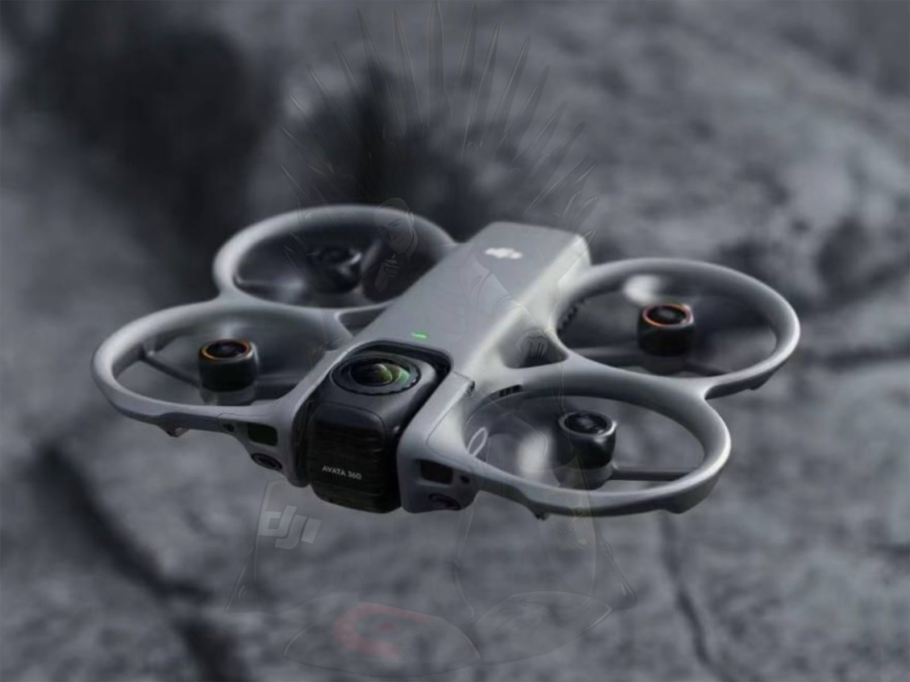
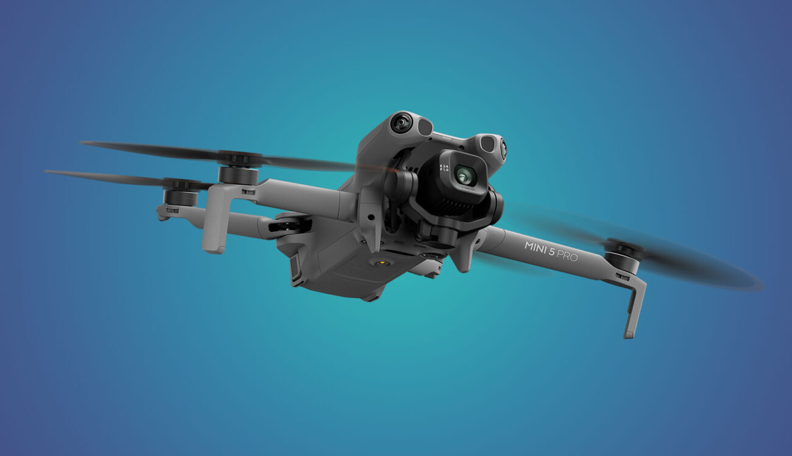
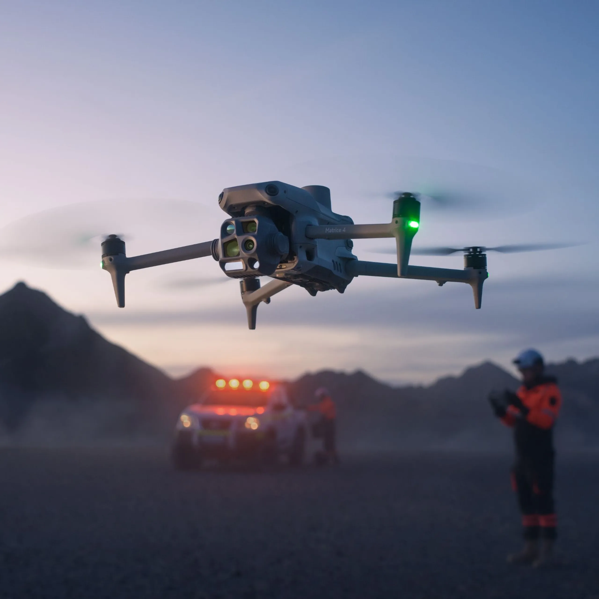

Lançamento DJI Avata 360: Saiba tudo sobre as especificações oficiais
O mercado de drones profissionais acaba de dar seu maior salto tecnológico em 2026. O DJI Avata 360 foi oficialmente...


O mercado de drones profissionais acaba de dar seu maior salto tecnológico em 2026. O DJI Avata 360 foi oficialmente...

DJI Mini 5 Pro: Vale a pena o upgrade? Review Completo e Especificações O DJI Mini 5 Pro redefine a categoria de...

Se você está planejando atualizar sua frota este ano, o cenário da DJI nunca foi tão potente. Com o lançamento...